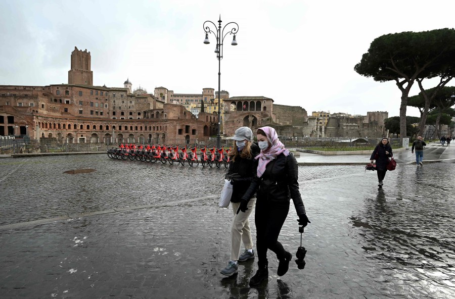
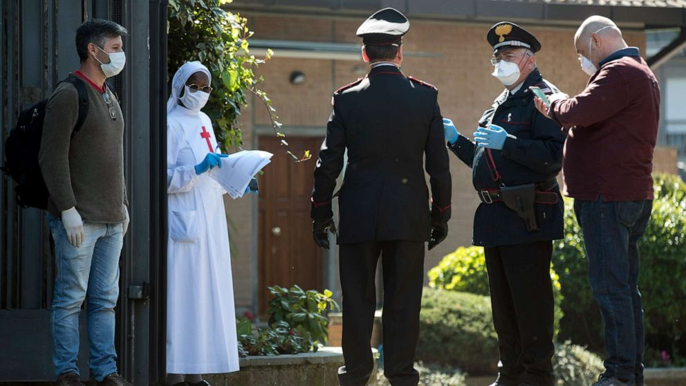
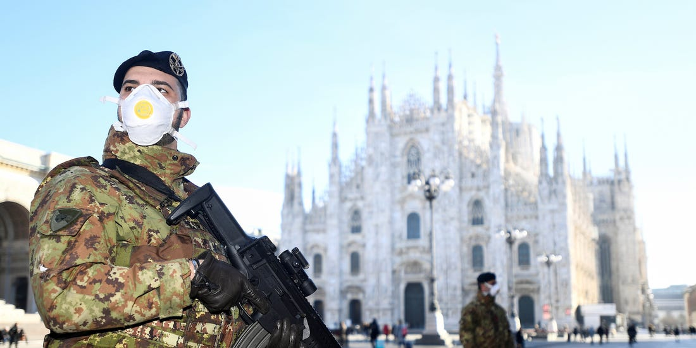
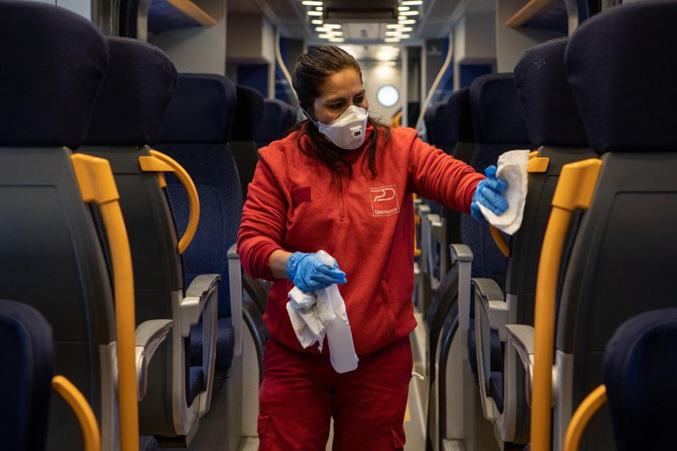

What has happened in Italy
In Wuhan, measures have been taken since February 9 to ensure that all confirmed and suspected coronavirus patients receive adequate medical care in an effort to halt the spread of the epidemic.
As of February 15, Wuhan has built 9 makeshift hospitals that were transformed from public venues such as exhibition centers, training centers and gymnasiums. These makeshift hospitals can hold over 6,900 beds, and 5,606 patients in mild conditions have been admitted.
The large capacity of the makeshift hospitals allows the public healthcare sector to admit more infected cases in much less time, which plays an important role in isolating the source of infection and cutting off the routes of infection for infection control and prevention.
The shortage of medical staff in the makeshift hospitals is being relieved by medical teams sent from other provinces and municipalities across the country. The medical staff is divided into 4 shifts to take care of patients with mild symptoms 24 hours a day. For the sake of infection control, different zones are marked with partitions separating each other. The bed spacing is more than 1 meter, and each bed has a power supply and is equipped with electric blankets, coats and other materials to meet the needs of patients. At the same time, the makeshift hospitals provide reading corners and large-screen TV sets for epidemic education and psychological counseling.
- 
- 
- 
- 